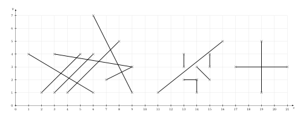
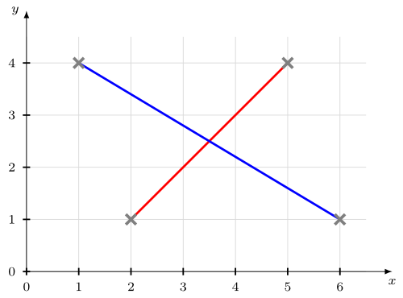
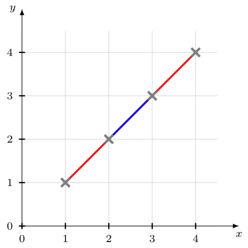
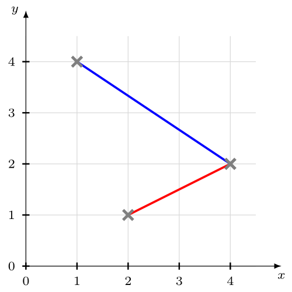
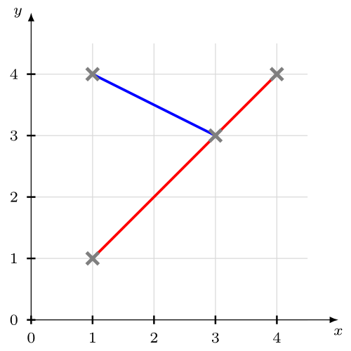
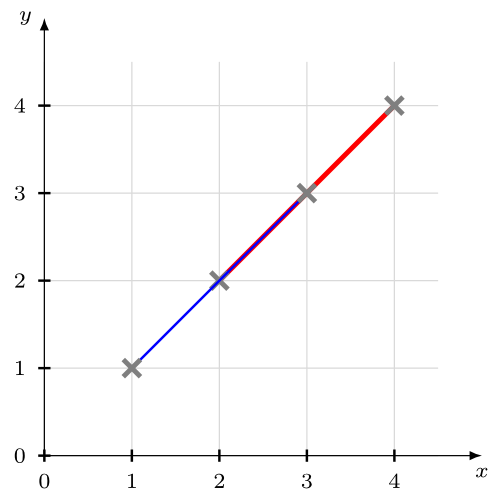

Suppose you're given a lot of lines. Your task is to give a list of all pairs of lines that cross.
The list of lines might be something like this:
|
|
|
You can visualize the given lines like this:
{kind=link}

Now your list of pairs should look like this: [[a, b], [a, c], [a, d], [d, g], [e, b], [e, c], [e, d], [e, f], [e, g], [f, g], [k, l], [m, n], [h, o]] So we have 15 lines and 13 intersections.
What is an intersection?
This means, all of the following images show intersecting lines:
{kind=link}

{kind=link}

{kind=link}

{kind=link}

{kind=link}

You might want to read my article How to check if two line segments intersect, as we need a method that gets two line segments as parameters and returns if they intersect.
How many intersections can exist?
Let \(n\) be the number of lines.
\(n=1\): If you have only one line, there is obviously no intersection. A line can only intersect with another line
\(n=2\): The new line can only intersect with lines that are already there. So there is one new intersection.
\(n=3\): As before, the new line can only intersect with existing lines. So you get at most two new intersection points. As the old lines can only have 1 intersection point at most, you have a maximum of 3 intersection points.
I guess you noticed the pattern. The maximum of intersection points of \(n\) is \(\displaystyle \sum_{i=1}^{n-1} i = \frac{(n-1)^2 + (n-1)}{2} = \frac{n^2 - 2n + 1 + n -1}{2} = \frac{n^2-n}{2}\)
At the moment, this is only an upper bound. We didn't prove that you can actually get that many intersections. We only showed that you can't get more intersections.
A simple solution
I know how to check if two line segments intersect (see article). But let's say I have \(n\) line segments and you want to find every pair of lines that intersect. You could simply go through each combination of pairs:
First way to think about it
- First, I can check if the first line crosses the second, third, fourth, ... n-th line.
- Then I check if the second line crosses the third, fourth, ... n-th line.
- ...
- I check if the (n-1)-th line crosses the n-th line.
So I have to do \((n-1) + (n-2) + \dots + 1 = \sum_{i=1}^{n-1} i = \frac{(n-1)^2+(n-1)}{2} = \frac{n^2-n}{2}\) checks.
Second way to think about it
I don't care about order. I have to do every check. So when I have \(n\) elements and I want to choose all pairs, I have \(\binom{n}{2} = \frac{n!}{2!(n-2)!} = \frac{n \cdot (n-1)}{2} = \frac{n^2-n}{2}\) checks.
Sweep-Line algorithm
The sweep line algorithm for checking intersections in a set of line segments goes through the image from left to right. When the sweep line (which is only an x-coordinate!) goes over a new line segment, it adds this to a data structure. When the sweep line comes over an end of a line segment, it removes the line segment from this data structure.